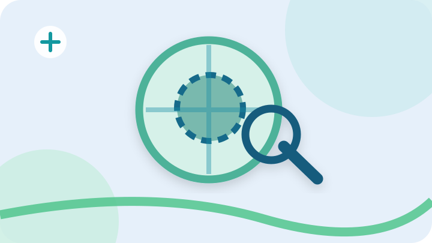

![رسم توضيحي: تقييم الكتل والآفات بالسونار]()
تقييم الكتل والآفات بالسونار
وصف موقع الكتلة وحجمها ومظهرها في الأعضاء أو الأنسجة القابلة للتصوير.
معلومات وتحضيرات الفحصاستخدام الموجات فوق الصوتية لتوصيف بعض الكتل وتوجيه أخذ العينات عند الحاجة.

قد يساعد السونار على وصف حجم وموضع وخصائص بعض الكتل. لا يكفي التصوير وحده دائمًا لتأكيد كون الكتلة حميدة أو خبيثة؛ وقد يحتاج الطبيب إلى فحوصات إضافية أو عينة نسيجية.
وصف موقع الكتلة وحجمها ومظهرها في الأعضاء أو الأنسجة القابلة للتصوير.
معلومات وتحضيرات الفحص![رسم توضيحي: توجيه خزعات الكتل بالسونار]()
المساعدة في تحديد موضع إدخال الإبرة عند أخذ عينة من كتلة.
معلومات وتحضيرات الفحص![رسم توضيحي: متابعة حجم الكتل بالتصوير]()
المقارنة بين قياسات الكتل في فحوصات مختلفة حين يناسب ذلك طبيًا.
معلومات وتحضيرات الفحصهذه المعلومات للتثقيف فقط، ولا تُعد توصية بإجراء الفحص أو تشخيصًا. تختلف متطلبات التحضير والتوفر وفق حالة المريض وتوجيه الطبيب. يُرجى الاتصال قبل الحضور للتأكد من الخدمة.
السبت إلى الخميس · 8 صباحًا – 10 مساءً · الجمعة إجازة
صنعاء – شارع الزبيري – برج المختبرات الدولية